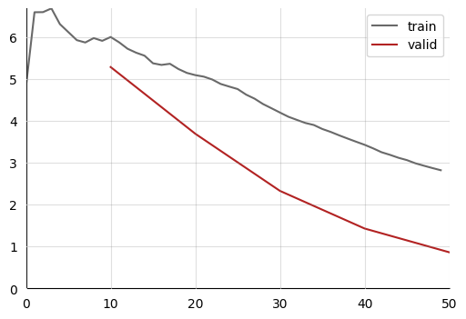

from fastai.test_utils import synth_learner
import matplotlib.pyplot as pltCallbacks
Event handlers
Training Callbacks
Callbacks that add functionlities during the training phase, including Callbacks that make decisions depending how a monitored metric/loss behaves
MeanLossGraphCallback
def MeanLossGraphCallback(
after_create:NoneType=None, before_fit:NoneType=None, before_epoch:NoneType=None, before_train:NoneType=None,
before_batch:NoneType=None, after_pred:NoneType=None, after_loss:NoneType=None, before_backward:NoneType=None,
after_cancel_backward:NoneType=None, after_backward:NoneType=None, before_step:NoneType=None,
after_cancel_step:NoneType=None, after_step:NoneType=None, after_cancel_batch:NoneType=None,
after_batch:NoneType=None, after_cancel_train:NoneType=None, after_train:NoneType=None,
before_validate:NoneType=None, after_cancel_validate:NoneType=None, after_validate:NoneType=None,
after_cancel_epoch:NoneType=None, after_epoch:NoneType=None, after_cancel_fit:NoneType=None,
after_fit:NoneType=None
):
Update a graph of training and validation loss
ShortEpochCallback
def ShortEpochCallback(
pct:float=0.01, short_valid:bool=True
):
Fit just pct of an epoch, then stop
GradientAccumulation
def GradientAccumulation(
n_acc:int=32
):
Accumulate gradients before updating weights
EarlyStoppingCallback
def EarlyStoppingCallback(
monitor:str='valid_loss', # value (usually loss or metric) being monitored.
comp:NoneType=None, # numpy comparison operator; np.less if monitor is loss, np.greater if monitor is metric.
min_delta:float=0.0, # minimum delta between the last monitor value and the best monitor value.
patience:int=1, # number of epochs to wait when training has not improved model.
reset_on_fit:bool=True, # before model fitting, reset value being monitored to -infinity (if monitor is metric) or +infinity (if monitor is loss).
):
A TrackerCallback that terminates training when monitored quantity stops improving.
SaveModelCallback
def SaveModelCallback(
monitor:str='valid_loss', # value (usually loss or metric) being monitored.
comp:NoneType=None, # numpy comparison operator; np.less if monitor is loss, np.greater if monitor is metric.
min_delta:float=0.0, # minimum delta between the last monitor value and the best monitor value.
fname:str='model', # model name to be used when saving model.
every_epoch:bool=False, # if true, save model after every epoch; else save only when model is better than existing best.
at_end:bool=False, # if true, save model when training ends; else load best model if there is only one saved model.
with_opt:bool=False, # if true, save optimizer state (if any available) when saving model.
reset_on_fit:bool=True, # before model fitting, reset value being monitored to -infinity (if monitor is metric) or +infinity (if monitor is loss).
):
A TrackerCallback that saves the model’s best during training and loads it at the end.
ReduceLROnPlateau
def ReduceLROnPlateau(
monitor:str='valid_loss', # value (usually loss or metric) being monitored.
comp:NoneType=None, # numpy comparison operator; np.less if monitor is loss, np.greater if monitor is metric.
min_delta:float=0.0, # minimum delta between the last monitor value and the best monitor value.
patience:int=1, # number of epochs to wait when training has not improved model.
factor:float=10.0, # the denominator to divide the learning rate by, when reducing the learning rate.
min_lr:int=0, # the minimum learning rate allowed; learning rate cannot be reduced below this minimum.
reset_on_fit:bool=True, # before model fitting, reset value being monitored to -infinity (if monitor is metric) or +infinity (if monitor is loss).
):
A TrackerCallback that reduces learning rate when a metric has stopped improving.
Loggers
The ShowGraphCallback is a convenient callback for visualizing training progress. By plotting the training and validation loss, it helps users monitor convergence and performance, making it easy to assess if the model requires adjustments in learning rate, architecture, or data handling.
ShowGraphCallback
def ShowGraphCallback(
args:VAR_POSITIONAL,
style:dict={'font.family': 'sans-serif', 'font.size': 10, 'text.color': 'black', 'axes.labelsize': 10, 'xtick.labelsize': 10, 'ytick.labelsize': 10, 'axes.titlesize': 16, 'axes.grid': True, 'axes.axisbelow': False, 'grid.alpha': 0.25, 'grid.linestyle': '-', 'grid.color': 'gray', 'xtick.color': 'white', 'ytick.color': 'white', 'xtick.labelcolor': 'black', 'ytick.labelcolor': 'black', 'figure.dpi': 100, 'savefig.dpi': 300, 'axes.spines.top': False, 'axes.spines.right': False, 'axes.spines.left': True, 'axes.spines.bottom': True, 'figure.facecolor': 'white', 'savefig.facecolor': 'white', 'lines.color': 'black', 'axes.prop_cycle': cycler('color', ['dimgray', 'firebrick', 'goldenrod', 'teal', '#102e42', 'darkslateblue', '#1c5175', 'cadetblue', 'steelblue'])},
kwargs:VAR_KEYWORD
):
Update a graph of training and validation loss
learn = synth_learner(cbs=ShowGraphCallback())
learn.fit(5)| epoch | train_loss | valid_loss | time |
|---|---|---|---|
| 0 | 5.909259 | 5.282905 | 00:00 |
| 1 | 5.143890 | 3.690665 | 00:00 |
| 2 | 4.299577 | 2.326964 | 00:00 |
| 3 | 3.500555 | 1.428414 | 00:00 |
| 4 | 2.820255 | 0.861397 | 00:00 |

The CSVLogger is a tool for logging model training metrics to a CSV file, offering a permanent record of training history. This feature is especially useful for long-term experiments and fine-tuning, allowing you to track and analyze model performance over time.
CSVLogger
def CSVLogger(
fname:str='history.csv', append:bool=False
):
Log the results displayed in learn.path/fname
Schedulers
Callback and helper functions to schedule hyper-parameters
ParamScheduler
def ParamScheduler(
scheds
):
Schedule hyper-parameters according to scheds
scheds is a dictionary with one key for each hyper-parameter you want to schedule, with either a scheduler or a list of schedulers as values (in the second case, the list must have the same length as the the number of parameters groups of the optimizer).
SchedCos
def SchedCos(
start, end
):
Cosine schedule function from start to end
SchedExp
def SchedExp(
start, end
):
Exponential schedule function from start to end
SchedLin
def SchedLin(
start, end
):
Linear schedule function from start to end
SchedNo
def SchedNo(
start, end
):
Constant schedule function with start value